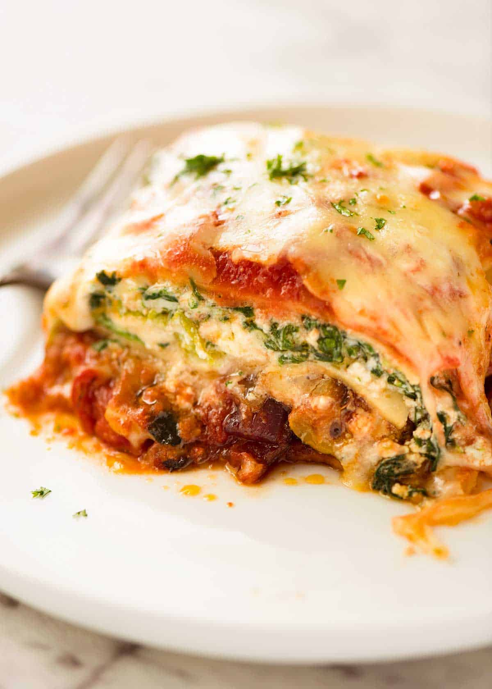

Vegetable Lasagna

Description:
This healthy, hearty, amazing lasagna has veggies in it. Can you believe that? What
a concept! Honestly, I have no idea what to write here, this is just to prove that
I know how to add paragraphs to a webpage. This is looking pretty good though. I just
hope I haven't made any mistakes. I ran the code a couple times and it seems like everything
is in working order, but who knows? This project is actually kind of fun though. Really
gives me a chance to test my skills and see if I'm really cut out for this sort of
thing. Anyway, thanks for reading and I hope this was interesting for you in some way.
Now I will list what this absolute unit of a dish is made of.
Ingredients:
- 1 (16oz) package lasagna noodles
- 1 pound fresh mushrooms, sliced
- 3/4 cup chopped green bell pepper
- 3/4 cup chopped onion
- 3 cloves garlic, minced
- 2 tablespoons vegetable oil
- 2 (26oz) jars pasta sauce
- 1 teaspoon dried basil
- 1 (15oz) container part-skim ricotta cheese
- 4 cups shredded mozzarella cheese
- 2 eggs
- 1/2 cup grated Parmesan cheese
Steps:
- Cook the lasagna noodles in a large pot of boiling water for 10 minutes, or until al dente. Rinse with cold water, and drain.
- In a large saucepan, cook and stir mushrooms, green peppers, onion, and garlic in oil. Stir in pasta sauce and basil; bring to a boil. Reduce heat, and simmer 15 minutes.
- Mix together ricotta, 2 cups mozzarella cheese, and eggs.
- Preheat oven to 350 degrees F (175 degrees C). Spread 1 cup tomato sauce into the bottom of a greased 9x13 inch baking dish. Layer 1/2 each, lasagna noodles, ricotta mix, sauce, and Parmesan cheese. Repeat layering, and top with remaining 2 cups mozzarella cheese.
- Bake, uncovered, for 40 minutes. Let stand 15 minutes before serving.